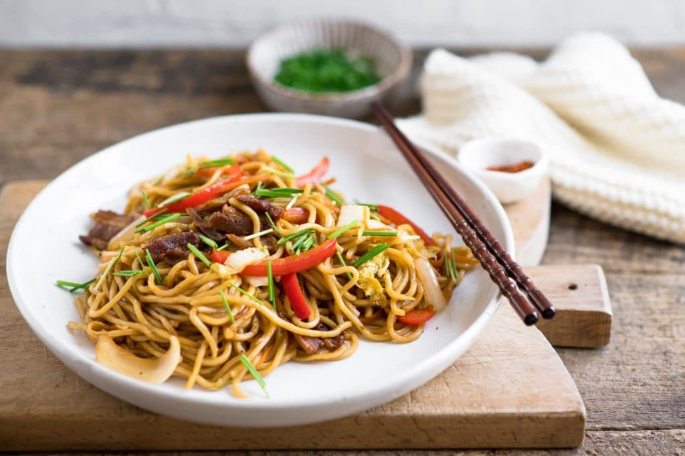

Yakisoba
Prep : 10 min | Cook : 10 min
--------------------------------------------------------
Ingredient List:
Yakisoba Noodles
1/2 Small Onion
1/4 cup Carrots (julienned)
1 Celery (junlienned)
1/2 Cup Chicken (chopped)
1/4 cup Water
1 Scallion (oval sliced)
Instructions:
1.) Stir fry vegetables (except for the scallions) and chicken in pan until. Take out of pan.
2.) Add a tablespoon of oil into pan with water. Stir fry noodles until broken up.
3.) Add vegetables and chicken back and add sauce packet. Stir fry together.
4.) Add scallions.